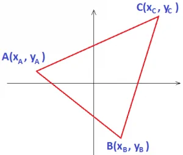
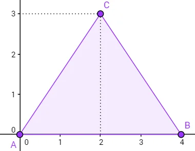
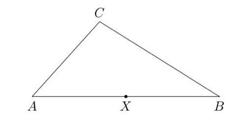
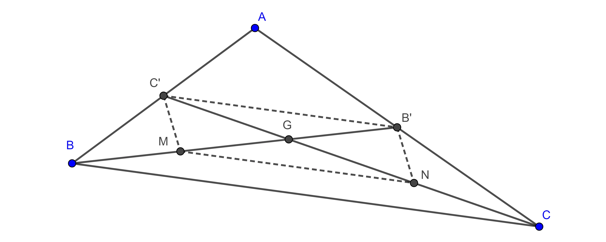
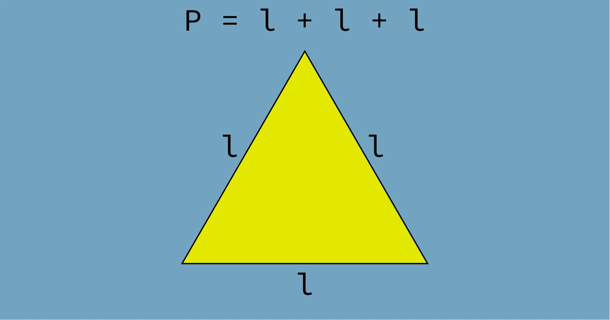

Mosaico Visual





Área do Triângulo por Coordenadas
A geometria analítica simplifica cálculos de áreas utilizando apenas pares ordenados mapeados. Não precisamos aplicar réguas, transferidores ou descobrir ângulos difíceis. Sabendo a posição exata de cada vértice cartesiano, conseguimos um resultado perfeito rapidamente.
Esse método matemático substitui cálculos geométricos demorados por uma operação direta. É uma alternativa incrível para exames, provas e sistemas de computação gráfica que processam mapas bidimensionais.
Como calcular
O processo utiliza determinantes de matrizes. Multiplicamos os valores numéricos cruzados para gerar um número base regulador.
A área final do polígono equivale exatamente à metade do valor absoluto gerado nessa conta:
½ · |x₁(y₂ - y₃) + x₂(y₃ - y₁) + x₃(y₁ - y₂)|
Utilizamos módulos matemáticos para evitar resultados negativos involuntários. Graças a isso, escolher uma ordem diferente para listar pontos geométricos nunca altera sua resposta final.
Exemplo prático
Imagine uma figura com três vértices localizados em A(0, 0), B(4, 0) e C(0, 3). Veja a resolução passo a passo:
½ · |0(0 - 3) + 4(3 - 0) + 0(0 - 0)| = ½ · |12| = 6 unidades de área
Pontos Notáveis do Triângulo
Retas internas geram intersecções chamadas pontos notáveis. O modelo analítico localiza tais centros espaciais usando equações comuns, eliminando imprecisões geométricas visuais.
Baricentro
O baricentro surge no cruzamento das três medianas. Cada mediana conecta um vértice ao ponto médio do lado oposto. Ele representa o ponto central de equilíbrio ou gravidade da figura espacial.
Com as coordenadas conhecidas, calculamos a posição do ponto G através de médias aritméticas simples nos dois eixos cartesianos:
G = ((x₁ + x₂ + x₃) / 3, (y₁ + y₂ + y₃) / 3)
Exemplo prático: Havendo vértices em A(0, 0), B(6, 0) e C(0, 6), o centro gravitacional ocupará a posição exata G(2, 2).

Circuncentro
O circuncentro surge no ponto de encontro das mediatrizes. Mediatrizes são linhas perpendiculares que dividem as faces do triângulo bem na metade. Esse local marca o centro exato da circunferência externa que envolve a forma matemática.
Para encontrá-lo, resolvemos pequenos sistemas lineares cruzando essas retas. O local final pode se situar na área de dentro, na parte de fora ou sobre as linhas externas.

Ortocentro
O ortocentro define o cruzamento das três alturas. A altura conecta um vértice até a base oposta gerando um ângulo reto perfeito. Sua posição espacial muda conforme o tipo de triângulo estudado.
Sua busca exige resolver sistemas com equações lineares dessas retas perpendiculares. Ele aparece dentro em estruturas acutângulas, fora em obtusângulas e em cima do próprio vértice nos triângulos retângulos.

Classificação do Triângulo por Coordenadas
Analisando dados do plano cartesiano, classificamos qualquer polígono de três pontas rapidamente. Usamos a fórmula tradicional de distância geométrica entre pontos:
d = √((x₂ - x₁)² + (y₂ - y₁)²)
Análise dos lados
Medimos a extensão dos três segmentos para descobrir a categoria do perímetro:
- Três lados iguais indicam um modelo Equilátero.
- Apenas dois lados idênticos caracterizam um formato Isósceles.
- Três comprimentos totalmente diferentes resultam em um tipo Escaleno.
Análise dos ângulos internos
Após descobrir o tamanho de cada reta lateral (denotadas como a, b e c), aplicamos o teste baseado na regra de Pitágoras:
- Igualdade perfeita (a² + b² = c²) confirma um Triângulo Retângulo.
- Soma maior (a² + b² > c²) define uma forma Acutângula.
- Soma menor (a² + b² < c²) demonstra um tipo Obtusângulo.
Exemplo prático: Dados os pontos cartesianos A(0, 0), B(3, 0) e C(0, 4), as distâncias encontradas medem 3, 4 e 5 unidades. Como a soma dos quadrados 3² + 4² resulta em 5², o sistema valida uma estrutura retângulo-escalena.
Galeria de Imagens geradas no Geogebra


{kind=link}